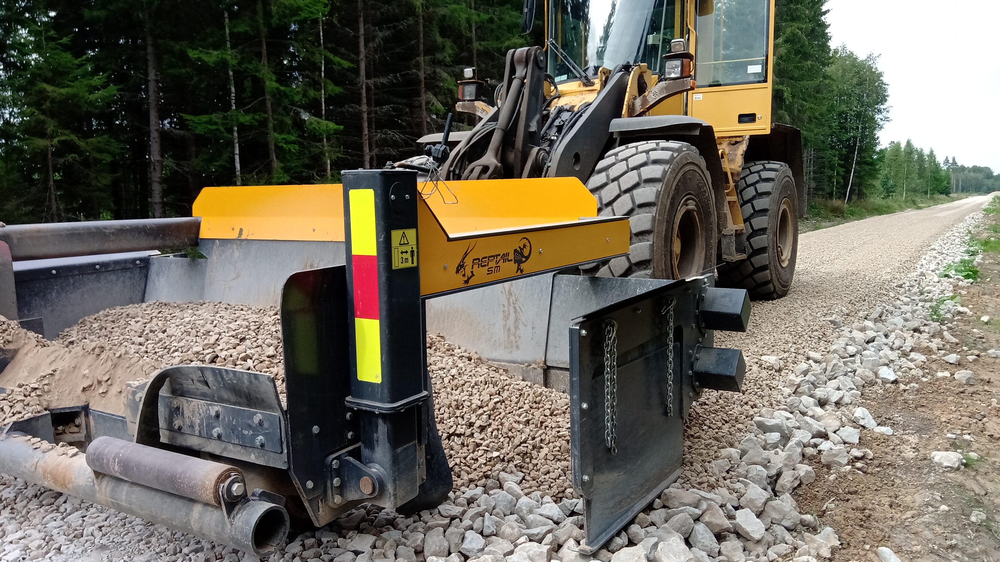
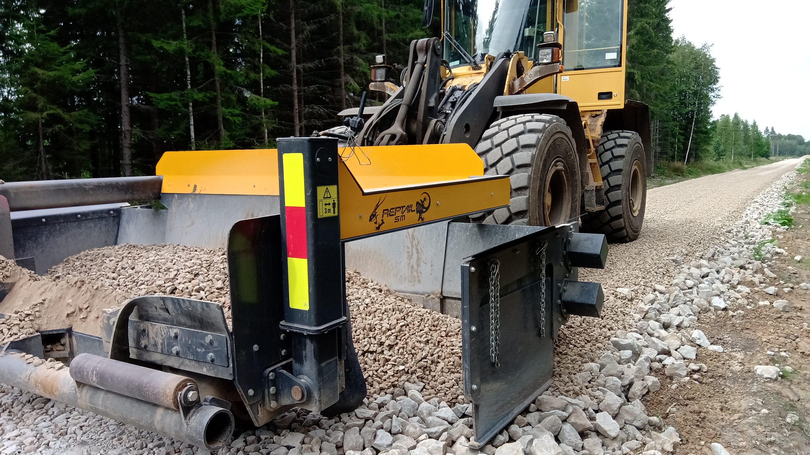

Teede ehitus ja teehooldus
Pakume greideri/teehöövli teenust ning purukruusa laotamist kattekihiks kruusateedele. Ostame ja müüme erinevaid kruusa-ja killustikufaktsioone,
samuti liiva ja mulda. Teeäärte niitmine poomniidukiga
Maakuivendus- ja maaparandustööd
Uute kraavide rajamine, vanade renoveerimine ja settest tühjendamine. Teostame teetööd ja tee parandustööd vastavalt vajadusele.
Kaubavedu maanteel
Pakume kaubavedu raskeveotreileriga ja kalluritega. Usaldusväärne teetööde partner Eestis.
Muud kaeve- ja mullatööd
Teostame tiikide kaevamist ja muid maaparandustöid. Hüdrohaamri teenus
Rasketehnika rent
Rendime ekskavaatoreid, laadureid, buldoosrit ja muud rasketehnikat. Rasketehnika rent teetöödeks ja muudeks ehitustöödeks.
Tee- ja kraavitrasside raadamine
Lõikus harvesteri ja giljotiiniga ning väljavedu.


 
